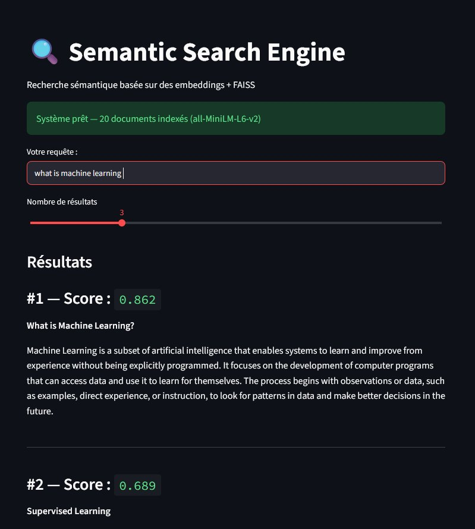

Projets / Moteur de recherche sémantique
Moteur de recherche sémantique
Un moteur qui compare les requêtes aux documents par le sens, et non par correspondance de mots-clés.
- Période
- 2026
- Type
- Projet personnel
- Modèle
- all-MiniLM-L6-v2
- Interface
- Streamlit

Fonctionnement
Documents→Sentence-Transformers plongements 384 d→Normalisation L2→FAISS IndexFlatIP→Top-k
- Chaque document est encodé en vecteur dense par all-MiniLM-L6-v2 (384 dimensions), puis normalisé.
- Les vecteurs sont stockés dans un index FAISS IndexFlatIP : comme ils sont normalisés, le produit scalaire est exactement la similarité cosinus, d'où des scores lisibles entre 0 et 1.
- La requête est encodée de la même façon ; FAISS renvoie les documents les plus proches.
Choix et limites
La recherche exhaustive est exacte et suffisante à l'échelle du corpus (20 documents rédigés à la main sur l'IA, le machine learning et le TAL). Sur plusieurs centaines de milliers de documents, il faudrait passer à un index approximatif de type IVF ou HNSW. Le corpus est remplaçable par n'importe quel fichier JSON au même format.
Python · Sentence-Transformers · FAISS · Streamlit